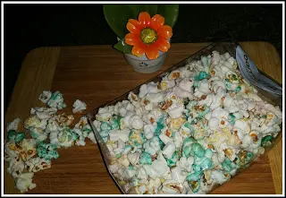
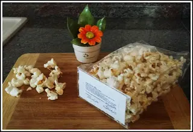
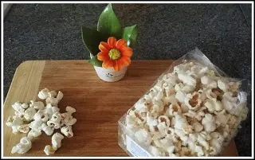
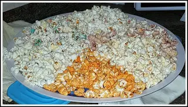

Bamama i pop corn fatti con gusto
Sì, perché diciamoci la verità, anche noi adulti quando andiamo ad una festa di paese o un compleanno di un bambino, o anche solo quando andiamo al cinema, veniamo attratti dal mitico pop corn.
Negli anni il pop Corn tradizionale è stato arricchito di tanti altri gusti tra cui scegliere. Io ora infatti, voglio proporvi un'azienda specializzata nella produzione di pop Corn in tanti gusti vari. BAMAMA
Un'azienda di Bologna che ha tanti negozi in giro per l'Italia e non solo.Vi dico subito che ho potuto assaggiare 6 varianti e sono molto buoni.Per la gioia delle mie nipotine, ho aperto tutti i gusti e li ho messi a centrotavola.Oltre a fare un bell'effetto, tutto colorato, c'è stata anche la simpatia di assaggiare gusto dopo gusto. Dopo infatti, non è stato più un aperitivo solo per bambini ma di tutta la famiglia.
I gusti che ho assaggiato sono:

UNICORNO
Sì, i pop Corn gusto unicorno, di cosa sanno? Sono un misto tra quelli tradizionali e a menta (da come ha potuto capire il mio palato).
BACON
Ci troviamo di fronte questi pop Corn che sembrano tradizionali dal colore, solo con un bianco un pochino più scuro, ed invece poi ritroviamo un gusto bacon all'assaggio.
FRAGOLA
Quelli a fragola sono troppo carini, a differenza degli altri che ho assaggiato, questi sono ovviamente dolci.
Sono di un color rosso chiaro e li ho trovati
davvero carini.
PIZZA

Beh, conoscete il colore della pizza in generale, il pomodoro rosso fa da padrone.
Ed infatti questi pop corn a pizza sono di un rosso pomodoro e sembrano più patatine che pop corn.
FORMAGGIO
Il formaggio poi, si sente appena li mastichiamo. Un pò come succede quando sgranocchiamo le classiche patatine al formaggio. Ancora con i pop corn sono inconfondibili.
TARTUFO

In questo caso il colore dei pop corn al tartufo di Bamama è più sul mattoncino. Questi si sentono, ancor prima dal sapore, anche dall'odore. Infatti appena ne prendete uno non avrete più dubbi. A differenza degli altri, questi al tartufo sono stati gli unici a piacermi meno. Ma questo lo associo al fatto che non amo già di mio il sapore del tartufo.
Opinione:
Insomma, per un happy hour sfizioso e comodato non potete non avere i pop corn bamama.
Li potete trovare in tanti negozi o/e contattare l'azienda direttamente e farveli inviare.

Io mi sono divertita ad assaggiare e a fotografare questi pop corn.
Vi inserisco qui sotto la loro pagina Facebook e il sito dove vi consiglio di dare un'occhiata e sbirciare quali altri gusti creano.
Infine, ringrazio quest'azienda per avermi fatto assaggiare queste meraviglie per il palato.